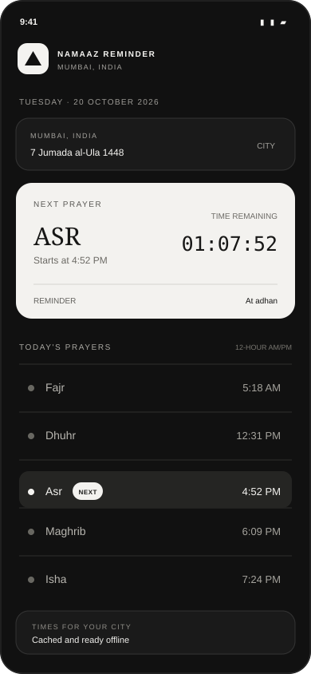

A quiet glance at the day
The collection · 04 apps
Small, thoughtful tools. Nothing extra.
One gallery, four focused apps for the things worth keeping track of. Free to use, with no ads and privacy at the centre.


Our approach
Useful by design. Quiet by default.
Every app starts with a simple promise: help with one everyday need, then get out of the way.
Your data stays yours
No account, no advertising, no analytics. Personal records stay on your device.
Ready when you need it
Thoughtful offline support keeps essential information close, even without a connection.
One job, done well
Focused tools with no clutter, no pressure, and no features added just to keep you scrolling.
Who makes these
A small studio, with a short list.
Just Apps is an independent studio in Mumbai, India. It builds one app at a time, for a need it knows first-hand.
Four apps, no roadmap theatre
Each app starts from a real, everyday need and stops when that need is met. There is no growth team, no engagement metric, and no plan to add features that keep you scrolling.
Free, and honestly so
No ads, no accounts, no in-app purchases and no analytics. The apps are cheap to run because they do not depend on a server that watches you.
Checkable, not just claimed
Screen Time Reminder, Subscription Tracker and Vaccine Routine are open source, so the privacy claims on this site can be read in the code rather than taken on trust.
Last reviewed 20 October 2026 · Privacy policy
Quick answers
About the apps
Clear details on the collection, privacy, and what each app does.
Are these apps free?
Yes. All four apps are free to use or download, and none has ads.
What does Vaccine Routine do?
It keeps a local vaccine record for a child, helps plan doses and reminders, and offers India’s National Immunization Schedule as optional suggestions.
Is the vaccine schedule medical advice?
No. The schedule is only a suggestion. Timing differs between children and states; follow the guidance of the health worker who sees your child.
What does Subscription Tracker do?
It lets you manually record subscriptions and recurring bills, see normalized monthly and yearly spending, track upcoming renewal dates, and receive optional reminders before payments are due.
Does Subscription Tracker connect to my bank?
No. You add costs and renewal dates yourself. The app does not connect to a bank, and subscription data stays stored locally on your phone.
Which app gives prayer times and adhan reminders?
Namaaz Reminder shows daily prayer times for cities in India, a countdown to the next prayer, and optional reminders at adhan.
Do the apps require an account or track me?
The apps are designed without accounts, advertising, or analytics tracking. Vaccine Routine stores its records locally on your device and works offline.